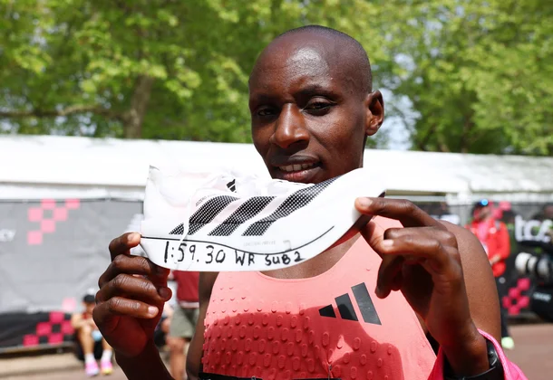

장비가 기록을 바꾼다
같은 선수라도 어떤 신발을, 어떤 수영복을 입느냐에 따라 기록이 달라집니다. 첨단 장비가 기록을 끌어올리는 현상을 '기술도핑(Technology Doping)'이라 부릅니다. 기술은 실력의 일부일까요, 아니면 반칙일까요?
기술도핑이란?
약물 도핑이 몸을 인위적으로 강화한다면, 기술도핑은 장비의 힘으로 기록을 인위적으로 끌어올리는 것을 말합니다. 스포츠계는 종종 특정 장비가 '공정한 경쟁'을 해친다고 판단해 사용을 금지해 왔습니다.
기록을 바꾼 장비들
- 나이키 베이퍼플라이 — 탄소섬유판을 넣은 이 러닝화는 마라톤 기록 단축의 상징이 됐습니다. 엘리우드 킵초게는 이 신발을 신고 특별 이벤트에서 인류 최초로 2시간 벽(1:59:40)을 넘었습니다.

흥미롭게도 이번 서브2의 주인공은 나이키가 아니라 아디다스 신발이었습니다. 사웨가 신은 것은 아디다스의 최상급 레이싱화 '아디제로 아디오스 프로 에보(Adizero Adios Pro Evo)'로, 이 역시 최첨단 기술이 집약된 신발입니다. 무게가 한 짝 약 138g에 불과할 만큼 극단적으로 가볍고, 자체 개발한 초경량 슈퍼폼과 카본 소재로 반발력을 극대화했습니다.
대신 대가도 있습니다. 이 신발은 내구성을 희생한 사실상 '1회용' 레이싱화입니다. 아디다스조차 "훈련 한 번과 마라톤 한 번을 뛰면 신발의 수명이 거의 끝난다"고 안내할 정도죠. 가격은 약 50만~70만 원(약 500달러)에 달합니다. 결국 나이키든 아디다스든, 인간의 한계를 넘는 기록 뒤에는 '한 번 쓰고 버리는' 극한의 신발 기술이 함께 있었던 셈입니다.
- 폴리우레탄 전신 수영복 — 2009년 로마 세계수영선수권에서는 이 수영복 덕에 무려 43개의 세계신기록이 쏟아졌습니다. 결국 국제수영연맹(FINA)이 착용을 금지했습니다.
- 로터스 자전거 — 1992 바르셀로나 올림픽에서 크리스 보드먼이 공기저항을 줄인 일체형(모노코크) 카본 자전거로 4,000m 세계신기록을 세웠습니다. 하지만 이 급진적 설계 역시 이후 국제사이클연맹(UCI)의 '루가노 헌장'에 따라 금지됐고, 지금은 전통적인 삼각형 프레임만 허용됩니다.
- 자외선 차단 렌즈 — 나이키가 선보인 특수 렌즈는 기술도핑 논란 끝에 퇴출됐습니다.
📌 3줄 요약
- 첨단 장비가 기록을 끌어올리는 현상을 '기술도핑'이라 부른다.
- 나이키 베이퍼플라이·전신 수영복 등은 공정성 논란 끝에 규제·퇴출됐다.
- 2026년 사웨가 정식 대회 최초로 마라톤 서브2(1:59:30)를 달성했다.
생각해보기 ▸ 더 좋은 장비를 쓰는 것도 선수의 실력일까요? 기술의 활용은 어디까지 허용되어야 공정할까요?